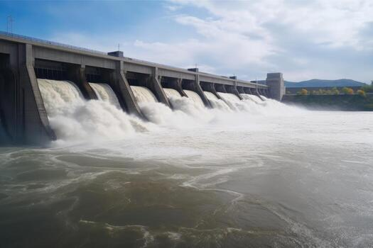

What is Hydropower?
Hydropower is a renewable source of energy that uses the
movement of water to generate electricity. It is one of the
oldest and most widely used forms of renewable energy.
How Does Hydropower Work?
Hydropower plants use flowing or falling water to turn turbines.
These turbines are connected to generators, which convert the
mechanical energy of moving water into electrical energy.
Advantages of Hydropower
- It is a renewable and clean source of energy.
- It produces electricity without burning fossil fuels.
- It can generate a large amount of electricity.
- It helps reduce greenhouse gas emissions.
- Water resources can be used repeatedly.
Disadvantages of Hydropower
- It requires suitable rivers or water resources.
- Building dams can be expensive.
- It may affect aquatic ecosystems and wildlife.
← Back to Home